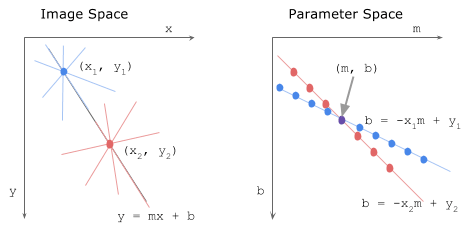
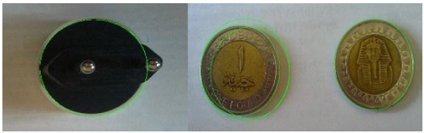

class: center, middle ## Hough Transform By: Eslam Adel email: eslam.a.mahmoud@eng1.cu.edu.eg --- class: top, left ## What we already studied? -- * Image representation -- * Image Processing 1. Contrast enhancement (Histogram) 2. Image filtering 3. Image Denoising -- * Edge Detection --- class: top, left ## What's next ? -- * Feature extraction -- * object detection -- * object recognition -- * Many applications 1. Manufacturing Industry (industrial robots) Applications of basic hough transform. 2. Face detection (Base for recognition) 3. Object Tracking --- class: top, left ## Hough Transform -- Proposed by Paul V.C Hough 1962 -- * Got USA [Patent](https://patents.google.com/patent/US3069654) -- * Originally for line detection -- * Extended to detect other shapes like , circle, ellipse etc. --- class:top,left ## Hough Line (Cartesian coordinates) -- * Slope intercept Parameter space -- * line equation $$ y = mx + b $$ * Parameter space m, b (2D) --  -- * limitation (slope of vertical line) --- class: top, left ### Hough Line (Polar Coordinates) -- * angle-radius parameter space -- * angle in range(-90:90), r in range( -diagonal : diagonal) -- <img style="width:75%" class="center" src="../../images/hough_deriving-rho.png"> --- class: top, left ### Basic Hough Line Algorithm -- ```python Extract image edges using Canny detector initialize parameter space r , theta with suitable step Create accumulator array and initialize to zero for each edge pixel for each theta calculate r = x cos(theta) + y sin(theta) Increment accumulator at r, theta Find Maximum values in accumulator (lines) Extract related r, theta Back to image space ``` -- Lets try to implement it. --- class: top, left ### Hough Circle -- * 3D parameter space -- * Circle $$ r^2 = (x - x_0)^2 + (y - y_0)^2 $$ -- * parameter space $x_0$, $y_0$, and r --  -- * Think about the algorithm --- class: top, left ## General hough transform * Get shape parametric equation -- * Build Hough (Parameter space) -- * Extract Peak values -- * Back to image space --- class: center, middle # Thanks